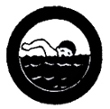
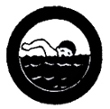

Swimming
- Swim 100 meters in good form using the following strokes for at least the distance specified:
- Side-Stroke - 20 meters
- Elementary Back Stroke - 20 meters
- Breast-Stroke - 60 meters
- Surface dive in two meters in water and recover an object from the bottom
- In water, two (2) or more meters deep, while fully dressed, remove trousers, tie an overhand knot on the bottom of each leg, inflate trousers and float motionless for one (1) minute using the inflate trousers as buoys; or while dressed as above, tread water, inflate shirt and float motionless for one (1) minute.
- Rest motionless in the water, or as nearly so as possible, at any angle, for one (1) minute.
- Enter water without sound, swim silently without splash for fifteen (15) meters (with breast stoke or dog paddle) leave water without sound.
- While swimming, submerge quickly (using both surface dive jackknife and duck dive and feet first method), swim three strokes forward under water, return to the surface and at signal, repeat three (3) times.
- In deep water, remove street clothes and swim forty (40) meters. *(Include socks, shoes, trousers, shins, sweater or sweatshirt)
(These tests must be performed before a Counselor who is a recognized swimming instructor of the Philippine National Red Cross or who holds an Aquatic School Certificate for Swimming from the Boy Scouts of the Philippines)